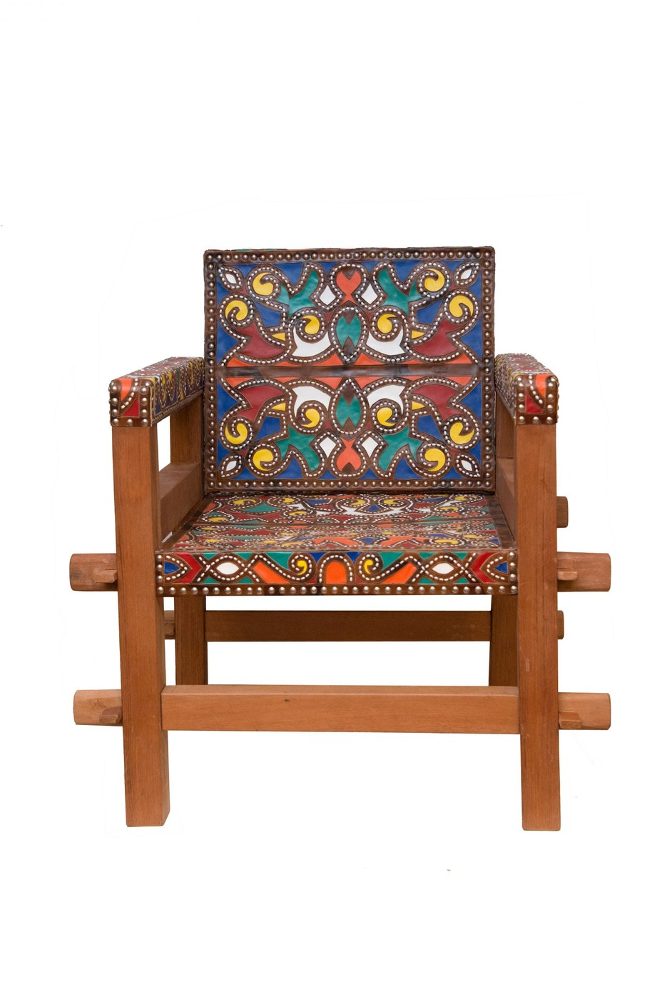
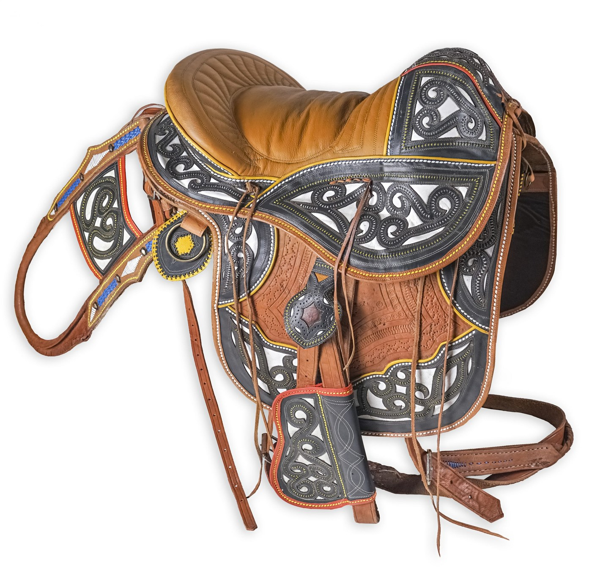
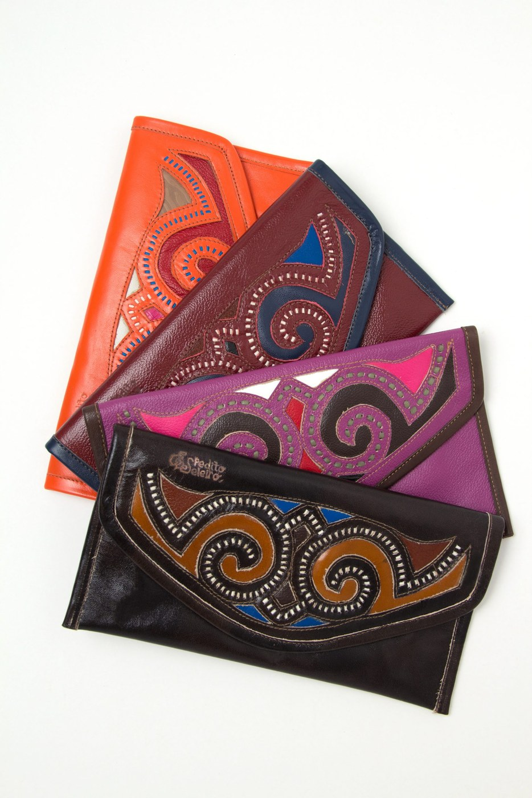
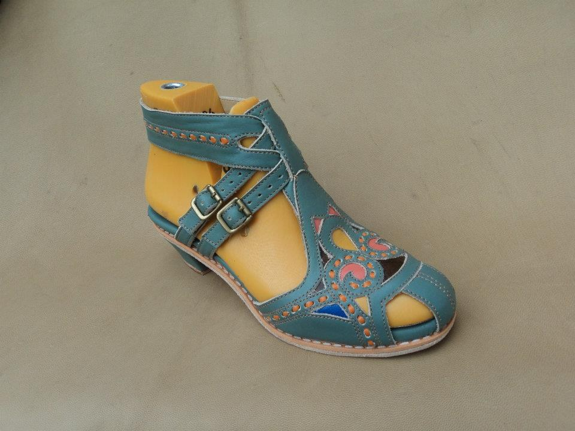
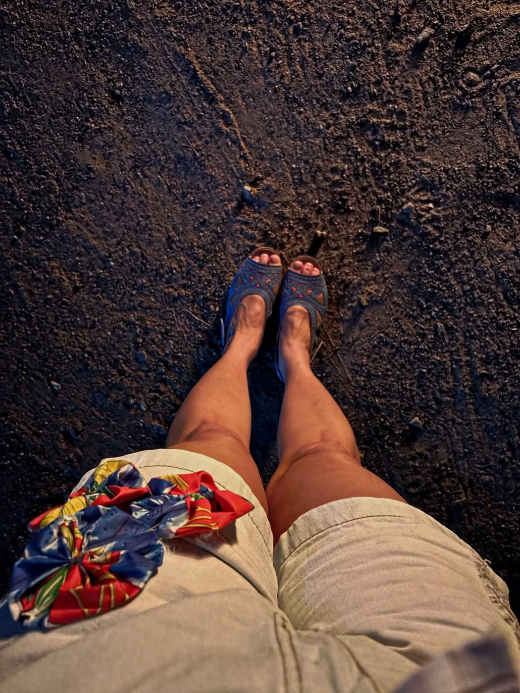

Mestre Espedito Seleiro
O couro do Cariri entre vaqueiros, cangaço, moda e desenho autoral.
Espedito Velozo de Carvalho, o Mestre Espedito Seleiro, reinventou a tradição familiar da selaria, criando uma linguagem reconhecível em sandálias, bolsas, chapéus, móveis e peças inspiradas na cultura do vaqueiro e do cangaço.
Espedito Velozo de Carvalho nasceu em Arneiroz, Ceará, em 1939, e cresceu numa família de seleiros. Começou a trabalhar com couro aos oito anos, seguindo uma linhagem de pai, avô e bisavô.
Com as mudanças no mundo do vaqueiro e a queda da demanda por selas e gibões, reinventou o ofício: passou a criar sapatos, bolsas, chapéus, carteiras e móveis. A sandália inspirada em Lampião e Maria Bonita tornou-se uma de suas criações mais conhecidas.
Sua obra é marcada por couro tingido, desenhos em curvas, corações e padrões que dialogam com a cultura do Cariri, do vaqueiro, dos ciganos e do cangaço. Recebeu reconhecimentos como Tesouro Vivo da Cultura do Ceará e Ordem do Mérito Cultural.
No couro de Espedito, tradição não fica parada: caminha, veste e viaja.
Para observar na peça
- Cores do couro
- Pespontos decorativos
- Corações e curvas
- Referências ao vaqueiro e ao cangaço
Materiais e técnica
Galeria de peças e referências de estilo
Obras e peças públicas reunidas para reconhecer linguagem, materiais e técnica. As peças da exposição são vistas apenas ao vivo.





Fontes e créditos
- Enciclopédia Itaú Cultural — Espedito Seleiro https://enciclopedia.itaucultural.org.br/pessoas/64683-espedito-seleiro
- Wikipédia — Mestre Espedito Seleiro https://pt.wikipedia.org/wiki/Mestre_Espedito_Seleiro